Ansh (Me)

This project was focused on learning image morphing techniques, while extending the knowledge we learned during image blending.
I used the tool linked here to select and find matching correspondences, which were saved as JSON. Then I found the average points between my two images (p1 + p2) / 2 to provide input to the triangulation. The output of this triangulation looks like the following for the standard images.
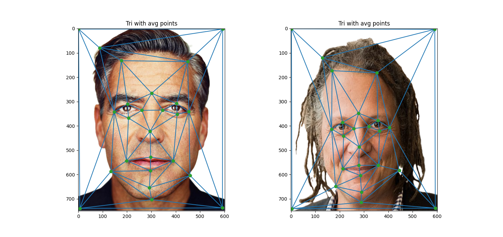
Note how the triangulation closely resembles both images, due to reletively accurate triangulation from the average "target" point (p1 + p2)/2 transmitting relevant simplexes.
The main idea behind the image morphing is to first find the desired warped shape using a weighted average of the points according to the parameter warp_frac. Then, matrices to represent the affine transformations between each corresponding triangle between both images and the desired shape. Then we use inverse warping to warp both images into the desired shape. From there we can simply cross-dissolve the two warped images based on dissolve_frac to accurately get the color information. For this part I actually went ahead and coded all the way to part three and implemented the morph function then passed in 0.5 and 0.5 for warp_frac and dissolve_frac respectively.
Ansh (Me)
|
The mid-way morph |
A cool friend |
Results from stitching the morph sequence together. In this area, we do make some minor adjustments recommended - padding A with 0,0, and 1 and B with 1, 1, 1 in order to allow the transformations to go beyond rotation, scaling, and transformations. Note that the "glow" effect comes from Apple computers' "Remove background" effect.
Example of a morph of me to my friend
|
Morph of the sample input provided
|
I chose the FEI database of images.
For the purposes of subsampling different populations, there was a natural divide between smiling and non-smiling datasets. I took advantage of that to come up with some pictures, followed up by the global dataset mean.
Non-smiling Images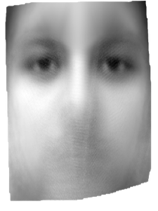 |
Smiling Images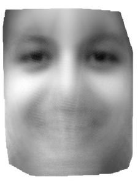 |
Global Mean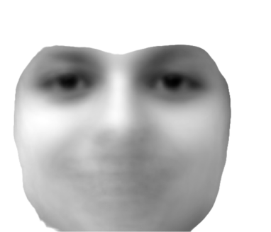 |
The first row contains the orginal sampled images, followed by the warped images
Sample 25b |
Sample 24a |
Sample 65a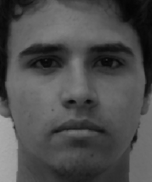 |
Sample 100a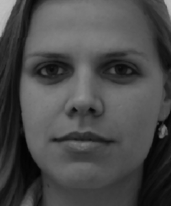 |
Sample 25b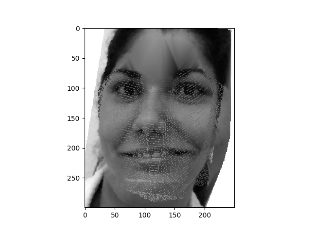 |
Sample 24a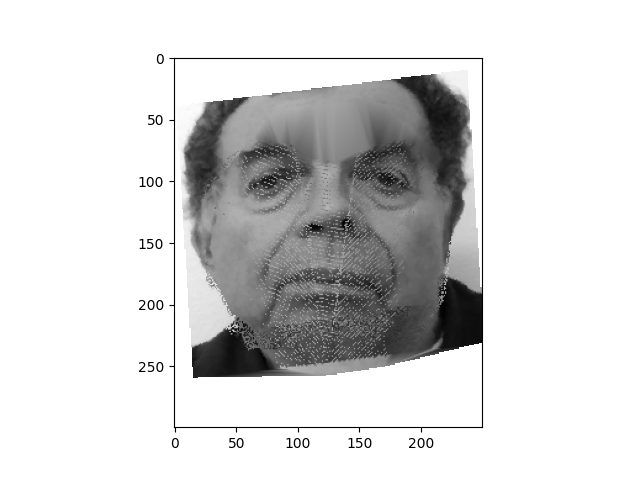 |
Sample 65a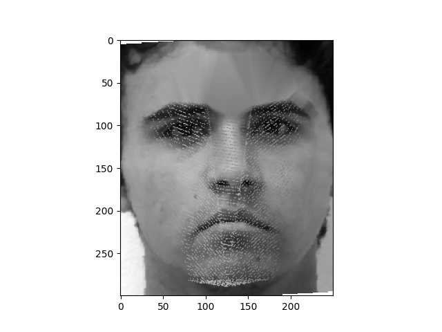 |
Sample 100a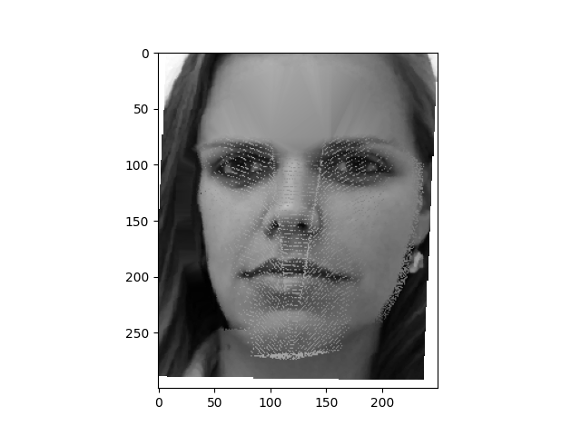 |
In these images above, we can note a few key changes: in the middle couples, notice the arrival of wrinkle-like deforms in the image. We can clearly see parts of the triangle in the one on the left, but there is some evidence to suggest that some lines and edges might be accentuated, such as in the case of sample 65a.
Now, here are the two warps, the first one where I warp my face into the average global geometry, and vice versa.
Warping myself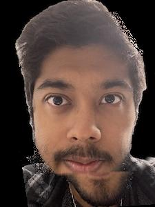 |
Warping the average image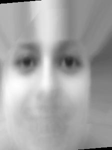 |
To get a caricature of my face by extrapolating from the population mean in part 4, I found another picture of myself, and took some samples from the dataset.
Self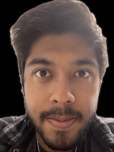 |
Self Warp into Average Image |
Average Global Image |
Average Caracaturized Image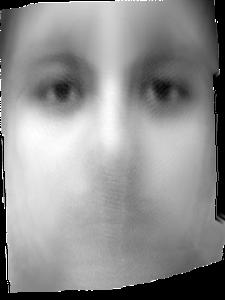 |
Here are some examples of caricatures on my warp that demonstrate a range of different alphas.
Alpha = -4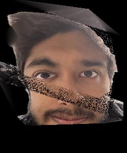 |
Alpha = -2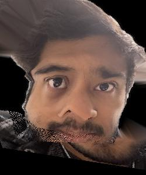 |
Alpha = -1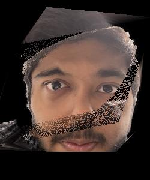 |
Alpha = 1.5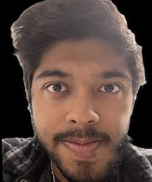 |
Alpha = 2 |
Alpha = 4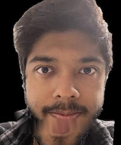 |
I note that alpha values >1 tend to be extreme moreso in the negative direction than positive. While a -4 alpha completely alters the scope of the image, a +4 alpha value doesn't make too much significant change on the image except for a small part of the area near the mouth.
I made a short movie sharing examples from my family images. Unfortunately, my computer is extremely old, and was borderline threatening to crash at multiple points.
That being said, I hope you enjoy the movie! Click on the link to see it in the Google Folder
Link: https://drive.google.com/drive/folders/1bOH6jlUXNIPJtDerCzQGO26F6VEMpIhT?usp=sharing